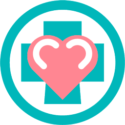

Graças à Conecta Kids, meu filho passou o tratamento com muito mais diversão.
Excelente projeto social. Muito organizado e fácil de participar.
Fiz uma doação de um tablet que estava parado. Recomendo!
A Conecta Kids arrecada aparelhos eletrônicos para serem utilizados em alas pediátricas de hospitais, proporcionando entretenimento, aprendizado e conforto às crianças.
